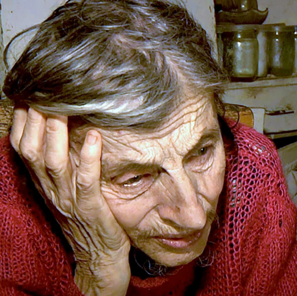

Blog Summary
Dear Friends, While we are thankful to be safe, we cannot help but think of thousands of Ukrainians forced to evacuate. Currently, Ukraine is home to 10,000 Holocaust survivors, who are isolated, frail and many homebound.
Dear Friends,
While we are thankful to be safe, we cannot help but think of thousands of Ukrainians forced to evacuate.
Currently, Ukraine is home to 10,000 Holocaust survivors, who are isolated, frail and many homebound. In light of the recent crisis, a number of organizations have appealed to The Blue Card to provide urgent support to survivors in need.
Thus far we have raised tens of thousands of dollars, and are distributing these funds to trusted, vetted, and effective partners on the ground to deploy urgent assistance to one of the most vulnerable groups of people impacted by this humanitarian crisis.
Together with our partners, we have provided food, hot meals, water and hygienic supplies to elderly and homebound survivors living in the country.
Please consider helping this effort by making tax deductible contribution today.
Sincerely,
Masha Pearl Executive Director